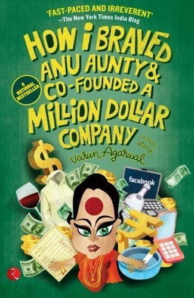

Library › Business & Startups
How I Braved Anu Aunty and Co-Founded a Million Dollar Company — Summary & Key Lessons

The funniest, truest Indian startup story: a lazy engineering student, an obsessed mother's friend, and the company that put every college on a t-shirt.
📖 OPEN THE FULL INTERACTIVE BREAKDOWN →🌐 Read it in Hindi, Hinglish, Gujarati, Tamil & 22 more languages — free, with audio.
💡 The Big Idea
Varun Agarwal did not want a job; he wanted to build things. With co-founder Rohn Malhotra, he started Alma Mater, selling customized merchandise (t-shirts, hoodies) to college students celebrating their identity: branch, batch, hostel, farewell. Against the relentless status updates of Anu Aunty (the neighborhood auntie who personified societal expectation) and a mother who wanted him employed, the company grew to supply over a thousand colleges. Behind the laughs are real lessons: ride a cultural wave (college pride), sell through existing student networks, and automate fulfillment before demand embarrasses you.
🧠 The 8 Key Lessons
Lesson 1: Sell Identity, Not Fabric
The First T-Shirt
Alma Mater's product was not cotton; it was belonging. A t-shirt that says ENGINEERING, MECHANICAL, 2011 sells a tribe. Founders should ask what identity their product lets customers wear (literally or figuratively). Category-defining brands sell membership first and features second, and membership prices higher than fabric ever will.
📖 Example: Orders exploded when colleges ordered branch-specific hoodies for fests and farewells; students photographed themselves in them, and every photo became free advertising aimed exactly at the next customer. Read the full example →
⚡ Do this: Define the identity your product expresses. Rewrite your product description to sell that membership, then price accordingly.
Lesson 2: Distribution Through the Student Grid
Campus Ambassadors
Instead of advertising, Alma Mater used the existing student grid: one ambassador per college with margin on bulk orders, fest tie-ups, and social sharing. The lesson generalizes: find the social infrastructure your niche already uses and ride it, rather than buying attention your margins cannot afford.
📖 Example: Fest season became a revenue spike: student councils bulk-ordered merch for volunteers and artists, and ambassadors earned real money, turning customers into a commissioned sales force. Read the full example →
⚡ Do this: Map the communities, events or influencers that already gather your niche. Design a margin structure that turns one of them into your sales force.
Lesson 3: Start Ugly, Automate Later
Living Room Logistics
The early operation was chaos: designs on PowerPoint, printing outsourced shop by shop, deliveries chased personally. That ugliness was fine at ten orders and fatal at a thousand; the founders survived by automating step by step (online design tools, printing partners with SLAs, order tracking) exactly as each bottleneck screamed. Do not build an assembly line for a demand you have not earned yet.
📖 Example: A viral order wave once collapsed their printing partner; the founders spent 48 hours manually rescuing orders, then signed two backup printers with service penalties, permanently fixing the single point of failure. Read the full example →
⚡ Do this: List your top three fulfillment bottlenecks today. Automate or backup the one that would embarrass you at 10x volume, and ignore the rest until demand insists.
Lesson 4: Anu Aunty Is a Market Signal
Society's Status Updates
The aunties and uncles (and anxious parents) represent the social default: job, stability, marriage timeline. The book's comic genius is treating that pressure as data: Anu Aunty was right that employment was safe, and the founder's answer was not defiance but evidence. Societal pressure never disappears; it gets rebranded as respect once revenue speaks.
📖 Example: The turning point with family came when a newspaper covered Alma Mater and relatives who had lectured him began asking for investor introductions; the same mouths, a different market price. Read the full example →
⚡ Do this: Pick the critic whose opinion shapes your family. Define the single proof (revenue, press, client) that flips their commentary, and go build that proof.
Lesson 5: Co-Founder Chemistry: The Doer and the Closer
Varun and Rohn
Varun brought creative energy and storytelling; Rohn brought structure, spreadsheets and sales discipline. Their arguments were constant and productive because each covered the other's blind spot. Founding teams fail when both members want the same job; they work when the division of labor is so natural that fights end in drafts and deals, not sulks.
📖 Example: Rohn institutionalized college contracts and pricing while Varun built the brand voice and social media presence; neither could have done the other's job, which made the partnership impossible to break. Read the full example →
⚡ Do this: Write down your co-founder's one irreplaceable strength. If it is the same as yours, one of you is redundant; if it covers your weakness, protect that partnership fiercely.
Lesson 6: Ride the Cultural Wave at Its Rise
College Pride Rising
Alma Mater timed a rising wave: Indian college culture (fests, alumni pride, batch identity) going online and loud on Facebook. Products that surf cultural moments grow on earned energy; the same product five years earlier or later would have pushed a rock uphill. Timing is a founder decision: watch for the behavior that is newly loud and build the merchant for it.
📖 Example: Facebook's explosion among Indian students let alumni pages and batch groups share merch posts organically; the platform's rise and Alma Mater's rise were the same graph. Read the full example →
⚡ Do this: Name the cultural behavior that is newly loud in your niche. Ask what commerce it lacks, and become that merchant before the wave crests.
Lesson 7: Growth Hides Operational Debt
The Thousand-College Problem
Serving a thousand colleges meant a thousand sizes, deadlines and art approvals. The company's growth eventually demanded institutional systems: design templates, payment discipline, partner networks. The lesson: celebrate product-market fit, then budget 50 percent of your energy for the boring machine that delivers it, or the machine will eat the brand.
📖 Example: Late deliveries before a farewell became an existential complaint thread; the founders instituted deadline guarantees and penalty-backed printer contracts, converting their worst reviews into their best promise. Read the full example →
⚡ Do this: Whatever you promise customers, attach a penalty to it internally. Operational debt dies when it costs you money, not when it costs you sleep.
Lesson 8: The Story Is Also the Product
Telling It Loud
Varun's honest, self-deprecating storytelling (the book, the talks, the viral posts) built Alma Mater's brand more cheaply than ads ever could. Founders underestimate narrative as distribution: people share stories, not SKUs. The caveat: the story must be true, or the same channel that lifted you will bury you.
📖 Example: The Anu Aunty narrative itself spread the company's name across Indian colleges; students bought merch from the guy who wrote the funny book about dodging the aunties. Read the full example →
⚡ Do this: Write your founding story in 200 honest words with a villain, a stumble and a win. Publish it where your customers already gather, and update it as you grow.
✅ 5-Step Action Plan
- Rewrite your offer to sell the identity your product expresses, then set the price to match.
- Recruit one ambassador inside each community you serve, with real margin.
- Automate the fulfillment bottleneck that would embarrass you at 10x, ignore the rest for now.
- Choose the proof that silences your family's Anu Aunty, and build only that proof next.
- Write and publish your honest founding story; narrative is a distribution channel.
⚠️ When This Doesn't Work
This is a comic memoir: dialogue is dramatized, timelines compress, and the business's later struggles (competition from cheaper printers, the fade of the merch wave after college culture moved on) are not the book's subject. Alma Mater itself eventually declined as the wave passed, which makes the timing lesson more important, not less. Laugh, then study the distribution chapter twice.
💀 The Graveyard Proves It
🎓 Alma Mater — Dressed a Thousand Colleges, Then the T-Shirt Wave Crested. Burn: 1000+ colleges served at peak → faded into irrelevance; brand quietly wound down. Read the full case study →
💬 Best Quotes from How I Braved Anu Aunty and Co-Founded a Million Dollar Company
- “Every college in India deserved to wear its identity. We just had to print it.”
- “Your Anu Aunty never goes away. You just outgrow her commentary.”
- “The best distribution is already social: students sell to students by wearing the product.”
Interactive version: mark lessons as read, listen in your language, share quote cards.